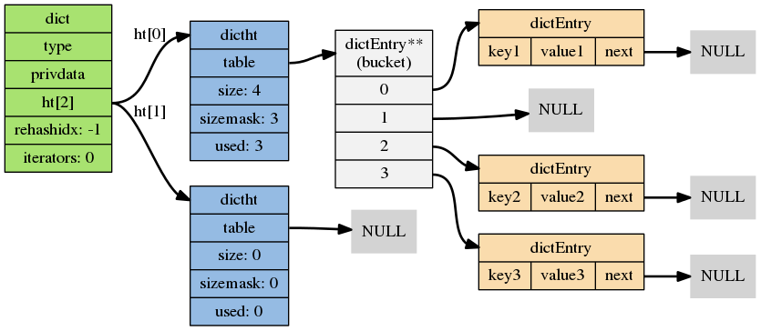
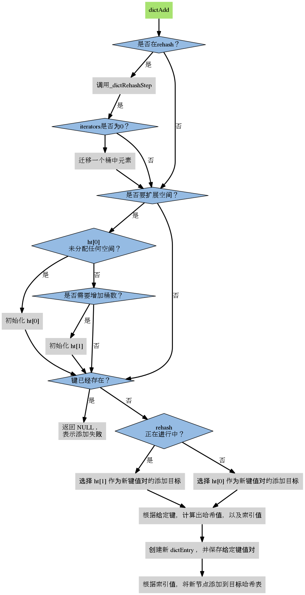

redis|dict
DICT
Redis字典具dd有以下特点：
- Redis字典的底层实现为哈希表，
- 每个字典使用两个哈希表， 一般情况下只使用 0 号哈希表， 只有在 rehash 进行时， 才会同时使用 0 号和 1 号哈希表。
- 哈希表使用链地址法来解决键冲突的问题。
- 自动 Rehash 扩展或收缩哈希表。
- 对哈希表的 rehash 是分多次、渐进式地进行的。
结构定义

|
|
dict添加流程

rehash
具体流程
- 创建一个比 ht[0]->table 更大的 ht[1]->table ， size为大于used*2的2的指数, 开始值为4
- 将 ht[0]->table 中的所有键值对迁移到 ht[1]->table
- 将原有 ht[0] 的数据清空，并将 ht[1] 替换为新的 ht[0]
开始时机
- 自然 rehash:ratio >= 1 ，且变量 dict_can_resize 为真
- 强制 rehash:ratio 大于变量 dict_force_resize_ratio
- 渐进式rehash:
- 主动方式:databaseCron中调用dictRehashMilliseconds执行一毫秒
- 被动方式:调用dictAdd，dicFind，dictDelete，dictGetRandomKey时，调用_dictRehashStep，迁移一个非空桶